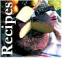

SWISS FAMILY SMOKEHOUSE, located in Southern Wisconsin would like to welcome you to our humble home. We take great pride in making you smile with our delicious cheese and summer sausage products. We do custom meat cutting for beef, pork, and venison. We also smoke a variety of cheeses on-site. Our specialty is putting together scrumptious gift baskets of cheese and summer sausage products.
Swiss Family Smokehouse- Custom Meat Cutters, Sausage Makers, Cheese Smokers, and Makers of fine gift baskets of cheese and summer sausage. We own and operate Swiss Family Smokehouse in Southern Wisconsin specializing in Wisconsin's proudest tradition of all beef summer sausage. Our cheese and summer sausage gift baskets are still made the "old-fashioned way" where quality continues to outshine quantity. The Waeffler family and now the Elmer family have kept the art of Swiss sausage making intact from the old country, and have preserved the time honored recipes for all to enjoy.
|
|
 |
Swiss Family Smokehouse, LLC. | 104 North Madison Street, Evansville, WI 53536 | Hours: M-F 8am-5pm, Sat 8am-Noon | Phone: (608)882-4030